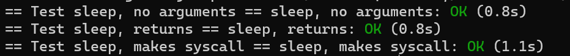

[课程地址](Lab: Xv6 and Unix utilities (mit.edu))_
1. 配置环境
2. sleep指令
实验要求：为 xv6 系统实现 UNIX 的 sleep 程序。你的 sleep 程序应该使当前进程暂停相应的时钟周期数，时钟周期数由用户指定。例如执行 sleep 100 ，则当前进程暂停，等待 100 个时钟周期后才继续执行。
安装好xv6系统内核后，观察项目代码（我这里已经编译过，所以实际可能有所不同），可以发现用户态的代码聚集在user文件夹下，内核态的代码聚集在kernel文件夹下
课程需要我们仿照user目录下的命令（例如ls），写一个sleep命令，在开始这个任务前，我们有一些前置工作需要完成
- 阅读xv6 book中的Chapter 1
- 阅读user/目录下的所有程序，理解如何编写一个命令行程序
这个链接包含了我对整本书的阅读理解
通过观察user文件夹下的其他代码，可以发现如果想要实现自己的函数，需要将代码放在user文件夹下，然后将文件名称写入makefile的UPROGS
1
2
3
4
5
6
7
8
9
10
11
12
13
14
15
16
17
18
| UPROGS=\
$U/_cat\
$U/_echo\
$U/_forktest\
$U/_grep\
$U/_init\
$U/_kill\
$U/_ln\
$U/_ls\
$U/_mkdir\
$U/_rm\
$U/_sh\
$U/_stressfs\
$U/_usertests\
$U/_grind\
$U/_wc\
$U/_zombie\
$U/_sleep\
|
所有实验都只能使用XV6所提供的函数，记录在user.h文件下
1
2
3
4
5
6
7
8
9
10
11
12
13
14
15
16
17
18
19
20
21
22
23
24
25
26
27
28
29
30
31
32
33
34
35
36
37
38
39
|
int fork(void);
int exit(int) __attribute__((noreturn));
int wait(int*);
int pipe(int*);
int write(int, const void*, int);
int read(int, void*, int);
int close(int);
int kill(int);
int exec(char*, char**);
int open(const char*, int);
int mknod(const char*, short, short);
int unlink(const char*);
int fstat(int fd, struct stat*);
int link(const char*, const char*);
int mkdir(const char*);
int chdir(const char*);
int dup(int);
int getpid(void);
char* sbrk(int);
int sleep(int);
int uptime(void);
int stat(const char*, struct stat*);
char* strcpy(char*, const char*);
void *memmove(void*, const void*, int);
char* strchr(const char*, char c);
int strcmp(const char*, const char*);
void fprintf(int, const char*, ...);
void printf(const char*, ...);
char* gets(char*, int max);
uint strlen(const char*);
void* memset(void*, int, uint);
void* malloc(uint);
void free(void*);
int atoi(const char*);
int memcmp(const void *, const void *, uint);
void *memcpy(void *, const void *, uint);
|
模仿其他文件例如rm.c，我们可以发现，需要使用int等数据类型，因此需要引入kernel/types.h头文件，还需要包含系统调用声明的头文件user.h，stat.h中包含了与文件相关的结构体。
1
2
3
4
5
6
7
8
9
10
11
12
13
14
15
16
17
18
19
20
21
22
|
#include "kernel/types.h"
#include "kernel/stat.h"
#include "user/user.h"
int main(int argc, char *argv[])
{
int i;
if(argc < 2){
fprintf(2, "Usage: rm files...\n");
exit(1);
}
for(i = 1; i < argc; i++){
if(unlink(argv[i]) < 0){
fprintf(2, "rm: %s failed to delete\n", argv[i]);
break;
}
}
exit(0);
}
|
通过观察rm.c以及其他要求观察的代码，我们可以发现实现一个可以在shell中运行程序需要按照如下模板：
1
2
3
4
5
6
7
8
9
10
11
12
13
14
15
16
17
18
19
20
21
|
#include "kernel/types.h"
#include "user/user.h"
int main(int argc, char *argv[])
{
if(argc < 2){
fprintf(2, "Usage: xxx files...\n");
exit(1);
}
for(i = 1; i < argc; i++){
}
exit(0);
}
|
按照要求完成sleep代码如下：
1
2
3
4
5
6
7
8
9
10
11
12
| #include "kernel/types.h"
#include "user/user.h"
int main(int argc, char *argv[]){
if(argc != 2){
fprintf(2, "Usage: sleep <ticks>\n");
exit(1);
}
int ticks = atoi(argv[1]);
sleep(ticks);
exit(0);
}
|
在目录下使用执行测试：./grade-lab-util sleep
结果如下：

3. pingpong
实验要求：使用 UNIX 系统调用编写一个程序 pingpong ，在一对管道上实现两个进程之间的通信。父进程应该通过第一个管道给子进程发送一个信息 “ping”，子进程接收父进程的信息后打印 : received ping ，其中是其进程 ID 。然后子进程通过另一个管道发送一个信息 “pong” 给父进程，父进程接收子进程的信息然后打印 : received pong ，然后退出。
实验提示：
- 使用 pipe 创建管道。
- 使用 fork 创建一个子进程。
- 使用 read 从管道读取信息，使用 write 将信息写入管道。
- 使用 getpid 获取当前 进程 ID 。
- 将程序添加到 Makefile 中的 UPROGS 。
- xv6 上的用户程序具有有限的库函数可供它们使用。你可以在 user/user.h 中查看，除系统调用外其他函数代码位于 user/ulib.c 、user/printf.c 、和 user/umalloc.c 中。
实验代码
1
2
3
4
5
6
7
8
9
10
11
12
13
14
15
16
17
18
19
20
21
22
23
24
25
26
27
| int main(int argc, char *argv[]) {
int p[2];
int p1[2];
pipe(p);
pipe(p1);
int pid = fork();
if (pid == 0) {
close(p[1]);
char buf[10];
read(p[0], buf, 10);
printf("%d: received %s\n", getpid(), buf);
close(p[0]);
close(p1[0]);
write(p1[1], "ping", 4);
close(p1[1]);
} else {
close(p[0]);
write(p[1], "pong", 4);
close(p[1]);
close(p1[1]);
char buf1[10];
read(p1[0], buf1, 10);
printf("%d: received %s\n", getpid(), buf1);
close(p1[0]);
}
exit(0);
}
|
整个实验其实是考察对管道的理解程度，让我们熟练应用管道
3. primes